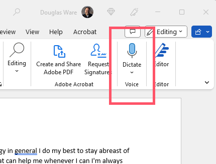
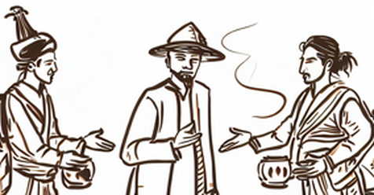
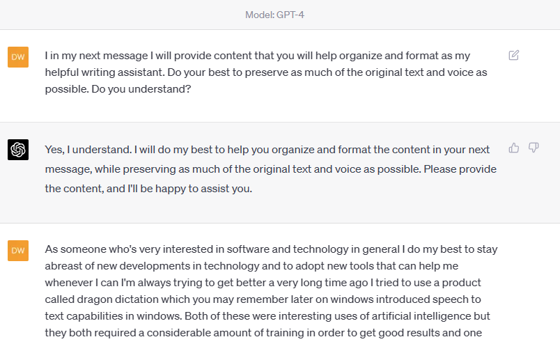

Speech to Text and Chat-GPT for Writing Authentic Content Quickly
Reevaluating Speech-to-Text for Software Development and Writing
As someone who's passionate about software and technology, I always strive to stay updated on new developments and adopt tools that can help me improve. A long time ago, I tried using Dragon Dictation and later, Windows' speech-to-text capabilities. Both were fascinating AI applications, but they required extensive training to yield good results and struggled with punctuation. These issues led to a less than ideal experience and caused me to overlook speech-to-text for many years.
Recently, I decided to reevaluate everything about my approach to software development, software architecture, and the surrounding processes. This includes reexamining fundamental tools like my keyboard and word processor. I'm writing this post using the Dictate button in Microsoft Word, a feature that's been available in the Office suite for some time, but which I hadn't used until today.
The Dictate button leverages the same software as Windows Speech in Windows 10 and 11, which can also be accessed through Voice Typing. While I've used Voice Typing before, I hadn't tried it in Microsoft Word, nor had I used the auto-punctuation feature. I was pleasantly surprised to find that the initial output is quite accurate in terms of capitalization, albeit with a few stop words and my own somewhat disorganized thoughts.

Instead of worrying about the rough draft, I plan to give this text to ChatGPT and ask it to clean it up for me, while dividing it into sections and preserving as much of the original text and voice as possible. Rather than having ChatGPT write an article for me, I'm asking it to help me write using my own words. I'll then use the results in my workflow for formatting and adding images through PowerShell tools available in an associated GitHub repository.

In just 5 minutes of dictation, I was able to create a one-page draft using Microsoft Word's Dictate button. I'm eager to see how ChatGPT cleans up the text, and I'll provide links to the original file, the ChatGPT output, and the final product so you can see the progression. If you're reading this article, you'll know firsthand how it all turned out in the end.
Evaluating the Results
Remember, my goal here was to write an article with my thoughts in my voice, not to ask ChatGPT a question and get an answer. Below you can see what I said and compare it to the ChatGPT output.
I think you’ll agree that the ideas are the same, the voice is the same, and the content came from me. I personally think this is the acid test. I am not passing off the creations of others and things as my own thoughts.
What I Dictated
As someone who's very interested in software and technology in general I do my best to stay abreast of new developments in technology and to adopt new tools that can help me whenever I can I'm always trying to get better a very long time ago I tried to use a product called dragon dictation which you may remember later on windows introduced speech to text capabilities in windows. Both of these were interesting uses of artificial intelligence but they both required a considerable amount of training in order to get good results and one thing they've always been bad at is punctuation
These problems made it not a very good experience for me. And so I have to confess, I took my eyes off of Speech to text as a possible option for general computing. At least for me personally. And I did that for many, many years.
When I say that, I'm reevaluating everything about how I do software development, software architecture, all of the things around the process. I mean everything. And that includes fundamental tools like. My keyboard. And my word processor.
I'm writing this post by using the Dictate button in Microsoft Word, which you have available to you if you have Microsoft Office. And like I said at the top, I've taken my eyes off of this space. Years ago and not come back. And so I'm embarrassed to admit that even though this feature has been in Microsoft Office and all of the Office applications for a long time. I don't really use them. Well, that's not really quite honest. What I should say is I never really used it until today. When I sat down to write this post.
I'm using the auto punctuation feature of the UH Office. Dictate, which is essentially the same software known as Windows Speech in Windows 10 and Windows 11, and in Windows 11 you can access it through a feature called Voice typing. So I've used voice typing before. But not in Microsoft Word and not with auto punctuation.
I have to say that the first cut of the. What I'm saying to Microsoft Word is is showing up in this document pretty well. It's fairly well capitalized, but it has some of my stop words in it and. It's, you know, a little haphazard in terms of my thinking. Um, So what? I'm. Trying to tell you is that I don't. Really worry about that. And I don't need to really worry about that because I'm gonna take this. Intermediate product which is pretty rough. And I'm going to give it to ChatGPT and ask it to clean it up for me. Divided up into sections. And then? Add the text back into the sections, but I'm going to explicitly tell it that I want to preserve as much of the original text and voice as possible. Because I'm not asking ChatGPT to write an article for me. I'm asking you to help me write an article. I'm not asking ChatGPT to put words in my mouth. I'm asking ChatGPT to use my words. I'll take the results of that and pass it through the rest of my workflow, which will let me do some formatting and add images using some PowerShell tools that are in this associated GitHub repository. And I'm going to write an article about those specifically soon and how to use them. Um, but in the meantime? This is the point in my article where I'm going to stop using, uh, the Dictate button in Microsoft Word, and I'm going to let ChatGPT clean it up. In the final post I'll put links to this original file so you can see what it looks like, as well as what ChatGPT produced and of course. If you're reading this article, you know what the final product actually looked like, how it turned out the other end. OK, so. I now have one page of text in Word. And I spent. Maybe 5 minutes. Dictating the words to create the first draft.
My Prompt

The Reply
Title: Reevaluating Speech-to-Text for Software Development and Writing
Introduction: As someone who's passionate about software and technology, I always strive to stay updated on new developments and adopt tools that can help me improve. A long time ago, I tried using Dragon Dictation and later, Windows' speech-to-text capabilities. Both were fascinating AI applications, but they required extensive training to yield good results and struggled with punctuation. These issues led to a less than ideal experience and caused me to overlook speech-to-text for many years.
Reevaluating Speech-to-Text: Recently, I decided to reevaluate everything about my approach to software development, software architecture, and the surrounding processes. This includes reexamining fundamental tools like my keyboard and word processor. I'm writing this post using the Dictate button in Microsoft Word, a feature that's been available in the Office suite for some time, but which I hadn't used until today.
Using Dictate in Microsoft Word: The Dictate button leverages the same software as Windows Speech in Windows 10 and 11, which can also be accessed through Voice Typing. While I've used Voice Typing before, I hadn't tried it in Microsoft Word, nor had I used the auto-punctuation feature. I was pleasantly surprised to find that the initial output is quite accurate in terms of capitalization, albeit with a few stop words and somewhat disorganized thoughts.
Leveraging ChatGPT to Refine the Text: Instead of worrying about the rough draft, I plan to give this text to ChatGPT and ask it to clean it up for me, while dividing it into sections and preserving as much of the original text and voice as possible. Rather than having ChatGPT write an article for me, I'm asking it to help me write using my own words. I'll then use the results in my workflow for formatting and adding images through PowerShell tools available in an associated GitHub repository. Soon, I'll write a dedicated article on how to use these tools.
Conclusion: In just 5 minutes of dictation, I was able to create a one-page draft using Microsoft Word's Dictate button. I'm eager to see how ChatGPT cleans up the text, and I'll provide links to the original file, the ChatGPT output, and the final product so you can see the progression. If you're reading this article, you'll know firsthand how it all turned out in the end.
--Doug Ware, April 18, 2023